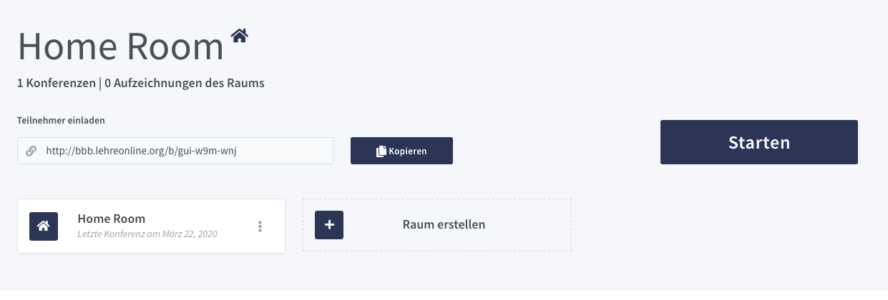

Erste Schritte mit BigBlueButton.
Eine Einführung in grundlegende Funktionen von BigBlueButton.

Nachdem Du es (hoffentlich) geschafft hast, mit unserer Beschreibung hier Deine eigene Serverinfrastruktur aufzusetzen und die Greenlight Oberflächen zu starten, ist es nun an der Zeit, für die erste Online-Sitzung. An dieser Stelle wollen wir Dich daher mit einigen zentralen Funktionen von BigBlueButton vertraut machen.
Gebe zunächst die Adresse Deines BigBlueButton Servers (z.B. bbb.lehreonline.org) in Deinem Browser ein. Du solltest folgende Seite sehen:

Logge Dich mit Deinem erstellten Nutzerkonto ein. Folgende Startseite erscheint:

Normalerweise reicht es nun, den Link für deinen digitalen Raum zu kopieren, an die Teilnehmer*innen zu verschicken und mit einem Klick auf Starten bzw. Teilnehmen die Sitzung zu beginnen. Falls Du übrigens vorher die Sprache ändern möchtest, kannst Du dies mit einem Klick auf Deinen Benutzernamen tun, wo sich unter “Profil” u.a. auch die Spracheinstellungen bearbeiten lassen.
Vor der ersten Sitzung ist es allerdings empfehlenswert, zunächst einmal eine Sitzung ohne Teilnehmer*innen zu starten, um sich mit den Funktionen von BigBlueButton vertraut zu machen. Wenn das nicht reicht, finden sich hier zudem hilfreiche (englische) Einführungsvideos.
Sobald einen digitalen Raum startet, öffnet sich folgendes Popup-Fenster, in dem man auswählen muss, wie man der Konferenz bzw. der Sitzung beitreten will.
Als Administrator wählen wir hier natürlich das Mikrofon aus. An dieser Stelle müssen wir dem Webbrowser in der Regel noch bestätigen, dass BigBlueButton auf das Mikrofon zugreifen darf. Danach öffnet sich ein weiteres Fenster, in dem wir noch bestätigen, dass der Sound funktioniert:
Nun gelangen wir auf die Startseite, auf der wir die verschiedenen Optionen ausprobieren können:

Unten in der Mitte findest Du die wichtigsten Funktionen:
Hier kannst Du sowohl Dein Mikrofon als auch Deine Kamera an- und ausstellen. Wenn Du das erste Mal die Kamera einschaltest, musst Du wieder bestätigen, dass BigBlueButton darauf zugreifen darf. Zudem bietet BigBlueButton verschiedene Möglichkeiten, das Materialen einzubauen und das Seminar oder den Unterricht interaktiv zu gestalten.
So besteht beispielsweise die Möglichkeit, Deinen gesamten Bildschirm oder aber auch nur ein einzelnes Programm mit den Teilnehmer*innen zu teilen. Da ist insbesondere hilfreich, wenn Dein Seminar auf diesem Programm aufbaut (z.B. in der statistischen Methodenlehre), sodass Du auf diese Weise Funktionen direkt im Programm erklären kannst. Anders als bei Jitsi Meet, bleibt es in diesem Fall auch weiterhin möglich, Dein Video mit den anderen Teilnehmer*innen zu teilen, was die Sitzung eventuell “persönlicher” wirken lässt.
Sehr hilfreich ist zudem die Möglichkeit, eine Präsentation hochzuladen und mit den Teilnehmer*innen zu teilen. Hierzu klickst Du auf das Pluszeichen unten links und wählst die Option Eine Präsentation hochladen aus:
Auf der folgenden Seite kannst Du Deine Präsentation ganz einfach per Drag&Drop auswählen und hochladen. Zurück auf der Startseite kannst Du Dich dann mit den Pfeiltasten durch die Präsentation manövrieren.
Zudem besteht die Möglichkeit durch Auswahl der Zeichenwerkzeuge auf der rechten Seite Notizen und Markierungen in der Präsentation hinzuzufügen. Durch einen Klick auf den Mehrbenutzermodus kannst Du dies auch für die anderen Teilnehmer*innen ermöglichen, sodass der Bildschirm ähnlich einer Tafel bzw. eines Whiteboards funktioniert.
Je nach Aufbau Deines Kurses ist zudem das Umfrage-Tool hilfreich, um die Interaktivität zu erhöhen oder sich Zwischenfeedback einzuholen. Du öffnest die Umfrage wieder über einen Klick auf den Kreuz-Button. Daraufhin öffnen sich verschiedene Möglichkeiten sowohl vordefinierte als auch benutzerdefinierte Umfragen durchzuführen. Dir bleibt zudem die Option überlassen, ob Du das Ergebnis mit den anderen teilen möchtest oder nicht.
Abschließend ist unserer Erfahrung auch die öffentliche Chatfunktion auf der linken Seite des Bildschirms eine hilfreiche Ergänzung für den Kursablauf. Hier können Kursteilnehmer*innen nicht nur Fragen stellen, sondern idealerweise auch schon gegenseitig beantworten, ohne dass man selbst als Kursleiter*in eingreifen muss. Hierfür ist zudem die Erstellung sogenannter Breakout Rooms hilfreich, in denen die Teilnehmer*innen sich in Kleingruppen austauschen und diskutieren können.

Falls Dein Server wider Erwarten doch einmal überlastet sein sollte, kannst Du in den Einstellungen, zu denen du mit einen Klick auf Optionen in der rechten oberen Ecke gelangst, unter Datenvolumeneinsparung die Webcams aller Teilnehmer*innen ausschalten.
Unter Optionen findest Du abschließend auch die Möglichkeit, die Sitzung für alle zu beenden.